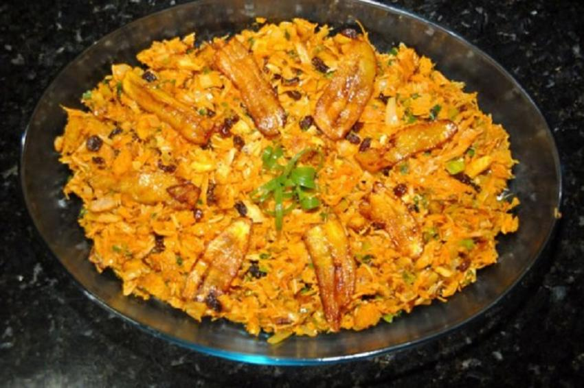

Pato no Tucupi
Pato no tucupi. Comer pato é coisa comum no pará, e o pato no tucupi está sempre na mesa em dias de festa. É considerado o prato que não pode faltar no círio de Nazaré, uma das maiores festas religiosas do país. Existem muitos criadores de pato no Pará, alguns apuram a raça a partir de vários cruzamentos, inclusive com patos selvagens, a carne é escura e firme preparado com vários temperos, o pato é assado cortado em pedaços e mergulhado no tucupi, um caldo amarelo extraído da mandioca, o último toque vem do jambu, planta picante que provoca ligeira dormência na boca e que faz parte de muitas receitas da cozinha paraense.

Pirarucu
Descrição do prato e outras informações.

Tacacá
Descrição do prato e outras informações.